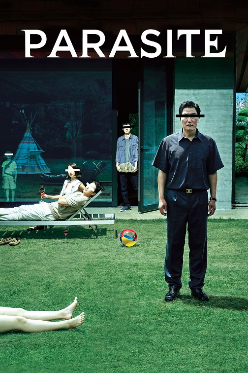
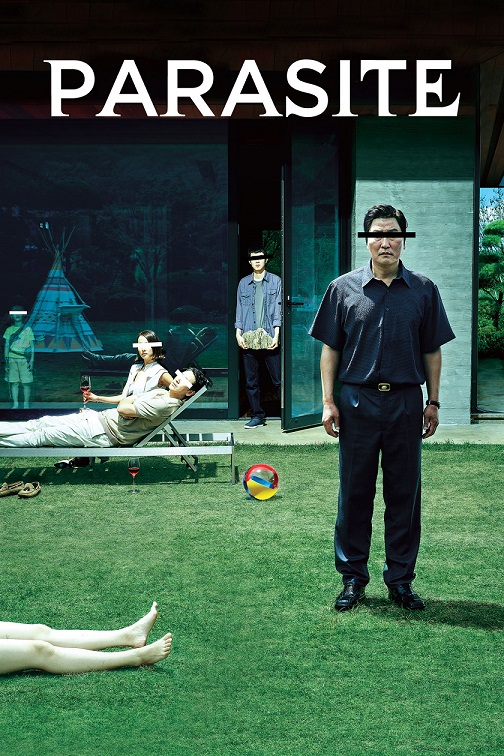

The Godfather "Don" Vito Corleone is the head of the Corleone mafia family in New York. He is at the event of his daughter's wedding. Michael, Vito's youngest son and a decorated WW II Marine is also present at the wedding. Michael seems to be uninterested in being a part of the family business. Vito is a powerful man, and is kind to all those who give him respect but is ruthless against those who do not. But when a powerful and treacherous rival wants to sell drugs and needs the Don's influence for the same, Vito refuses to do it. What follows is a clash between Vito's fading old values and the new ways which may cause Michael to do the thing he was most reluctant in doing and wage a mob war against all the other mafia families which could tear the Corleone family apart.

After a number of people are killed and a cargo ship set on fire, Roger 'Verbal' Kint is questioned by U.S. Customs Agent Dave Kujan. Reluctant at first, Verbal begins to tell them what happened starting with when he met four men, all criminals, sharing a holding cell for a few hours. Together, they join forces to successfully hijack a jewel shipment and head to Los Angeles to lay low. There they are contacted by a lawyer, Kobayashi, representing the much-feared international criminal Keyser Söze who wants them to do a job for him. The result is the attack on the cargo ship. Verbal refuses to give evidence in the case and is set free. Only then does Kujan realize what's really happened. Who actually is Keyser soze?
Since birth, a big fat lie defines the well-organised but humdrum life of the kind-hearted insurance salesman and ambitious explorer, Truman Burbank. Utterly unaware of the thousands of cleverly hidden cameras watching his every move, for nearly three decades, Truman's entire existence pivots around the will and the wild imagination of the ruthlessly manipulative television producer, Christof--the all-powerful TV-God of an extreme 24/7 reality show: The Truman Show. As a result, Truman's picturesque neighbourhood with the manicured lawns and the uncannily perfect residents is nothing but an elaborate state-of-the-art set, and the only truth he knows is what the worldwide television network and its deep financial interests dictate. Do lab rats know they are forever imprisoned?

Set within a year after the events of Batman Begins (2005), Batman, Lieutenant James Gordon, and new District Attorney Harvey Dent successfully begin to round up the criminals that plague Gotham City, until a mysterious and sadistic criminal mastermind known only as "The Joker" appears in Gotham, creating a new wave of chaos. Batman's struggle against The Joker becomes deeply personal, forcing him to "confront everything he believes" and improve his technology to stop him. A love triangle develops between Bruce Wayne, Dent, and Rachel Dawes.
Jobless, penniless, and, above all, hopeless, the unmotivated patriarch, Ki-taek, and his equally unambitious family--his supportive wife, Chung-sook; his cynical twentysomething daughter, Ki-jung, and his college-age son, Ki-woo--occupy themselves by working for peanuts in their squalid basement-level apartment. Then, by sheer luck, a lucrative business proposition will pave the way for an ingeniously insidious scheme, as Ki-woo summons up the courage to pose as an English tutor for the teenage daughter of the affluent Park family. Now, the stage seems set for an unceasing winner-take-all class war. How does one get rid of a parasite?
https://www.imdb.com/title/tt0068646/plotsummary
https://www.imdb.com/title/tt0114814/plotsummary
https://www.imdb.com/title/tt0120382/plotsummary